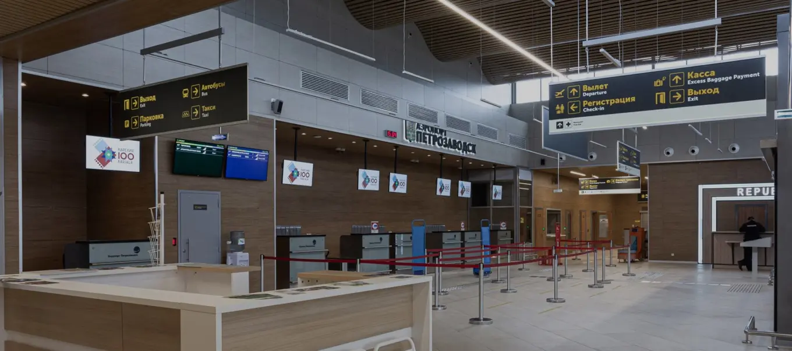

Международный аэропорт Петрозаводск
Петрозаводск · 30 рабочих дней
Комплексное оснащение актового зала в городе Истра

Стоимость и срок указаны для этого объекта. Смета нового проекта зависит от помещения, комплектации и состава работ.
В подмосковном санатории Новая Истра проводилась полная реконструкция одного из корпусов, новым назначением которого должно было стать проведение конференций, деловых встреч, официальных собраний, лекций и культурно-просветительских мероприятий для гостей и сотрудников, а также корпоративных сессий и презентационных показов, в связи с чем перед ГК Айтек стояла задача оснастить актовый зал современным мультимедийным оборудованием.
Специалистами ГК Айтек был успешно завершён проект по комплексному оснащению объекта современным мультимедийным оборудованием под ключ. В ходе реализации проекта был произведён весь спектр работ — от поставки оборудования и разработки проектной документации до финальной отладки систем. Состав реализованного комплекса: Проектор с мощностью светового потока 8000 люмен Проекционный моторизированный экран 3,37 х 6м Звуковые настенные и напольные системы Микрофонные системы для хорового и концертного выступления Театральное и профильное освещение сцены и зала Антрактно-раздвижной занавес на эклетроприводе Централизованное управление всем оборудованием с единого пульта
Наиболее значимым и максимально оснащённым помещением стал Актовый зал, ведь в нём должны проводиться мероприятия перед многочисленной зрительской аудиторией.
Система озвучивания актового зала состоит из фронтальных акустических систем, которые находятся по бокам от сцены и озвучивают площадь зрительских мест, а также колонок-«прострелов», располагающихся внутри сцены за кулисами и предназначенных для озвучивания непосредственно площади сцены. Каждая фронтальная акустическая система состоит из двух секций (модулей) с различными АЧХ, которые вместе выполняют функции линейного массива. «Прострелы» – пара активных акустических колонок. Сигнал на акустические системы подаётся непосредственно с выходов цифрового микшера, располагаемого на рабочем месте оператора за рядами зрительских мест. Актовый зал оснащён несколькими ручными радиомикрофонами, а также настольной беспроводной конференц-системой из 8-ми настольных микрофонных пультов. Она будет использоваться при проведении заседаний, когда на сцене будет устанавливаться большой стол президиума.
На полу сцены врезаны два лючка , с левой и правой стороны. В лючках расположены электрические розетки и звуковые разъёмы, предназначенные как для подключения активных сценических мониторов, так и для проводных микрофонов. Посредством такой системы коммутации можно осуществить подключение всех входов и выходов микшера в любую точку сцены.
Для демонстрации видео , например фильмов, в актовом зале установлен видеопроекционный экран шириной 6 м и мощный видеопроектор. Контент на видеопроекционную систему подаётся со стационарного компьютера, расположенного на рабочем месте оператора. Также возможно подключение ноутбуков через упомянутые сценические лючки.
Для светового сопровождения мероприятий , проводимых на сцене предусмотрена система сценического освещения. Световые приборы смонтированы под потолком спереди и сзади сцены, так же имеются приборы, размещённые на боковых стенах зала и направленные на сцену. Управление световым оборудованием осуществляется при помощи специального пульта, расположенного на рабочем столе оператора. Световое оборудование может работать как в ручном, так и автоматическом режимах.
В актовом зале реализован антрактно-раздвижной занавес с электроприводом. Материал занавеса выполнен из негорючей ткани соответствуют всем нормам пожарной безопасности. Управление занавесом осуществляется с помощью централизованной системы управления “умный дом”. Для затемнения общего освещения в зале была предусмотрена система моторизованных автоматических штор, которые также управляются через систему “умного дома”.
Для централизованного управления всем оборудование м , расположенном в актовом зале, была предусмотрена интегрированная система управления, позволяющая включать и выключать оборудование по заранее предустановленным сценариям, например, конференция или концерт. Управление системами в зале осуществляется с помощью интерактивной настенной панели, расположенной у стола оператора. Все программное обеспечение было написано индивидуально для Заказчика и имеет интуитивно понятный интерфейс.
В бриф перейдут выбранный проект, тип помещения и бюджет примера. Все параметры можно изменить.